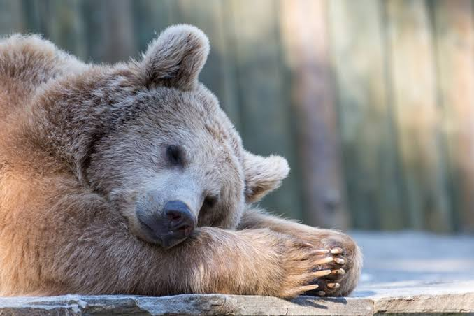

INFO RELEVANTES SOBRE LOS OSOS POLARES
El oso polar o oso blanco (Ursus maritimus) es el carnívoro terrestre más grande del mundo. Habita de forma exclusiva en el medio polar y las zonas heladas del hemisferio norte (el Ártico). A diferencia de otros miembros de su familia, se le considera un mamífero marino debido a que pasa la mayor parte de su vida estrechamente vinculado al hielo marino del océano.
• El pelo no es blanco: Sus pelos son en realidad transparentes, translúcidos y huecos. Parecen blancos a nuestros ojos porque reflejan la luz visible del entorno. Además, canalizan la radiación solar directamente hacia la piel. Piel completamente negra: Debajo de su pelaje, su piel es oscura. Esta epidermis negra le permite atrapar y absorber al máximo la energía calórica del sol. Incluso su lengua es de un color azulado/negro por razones similares.